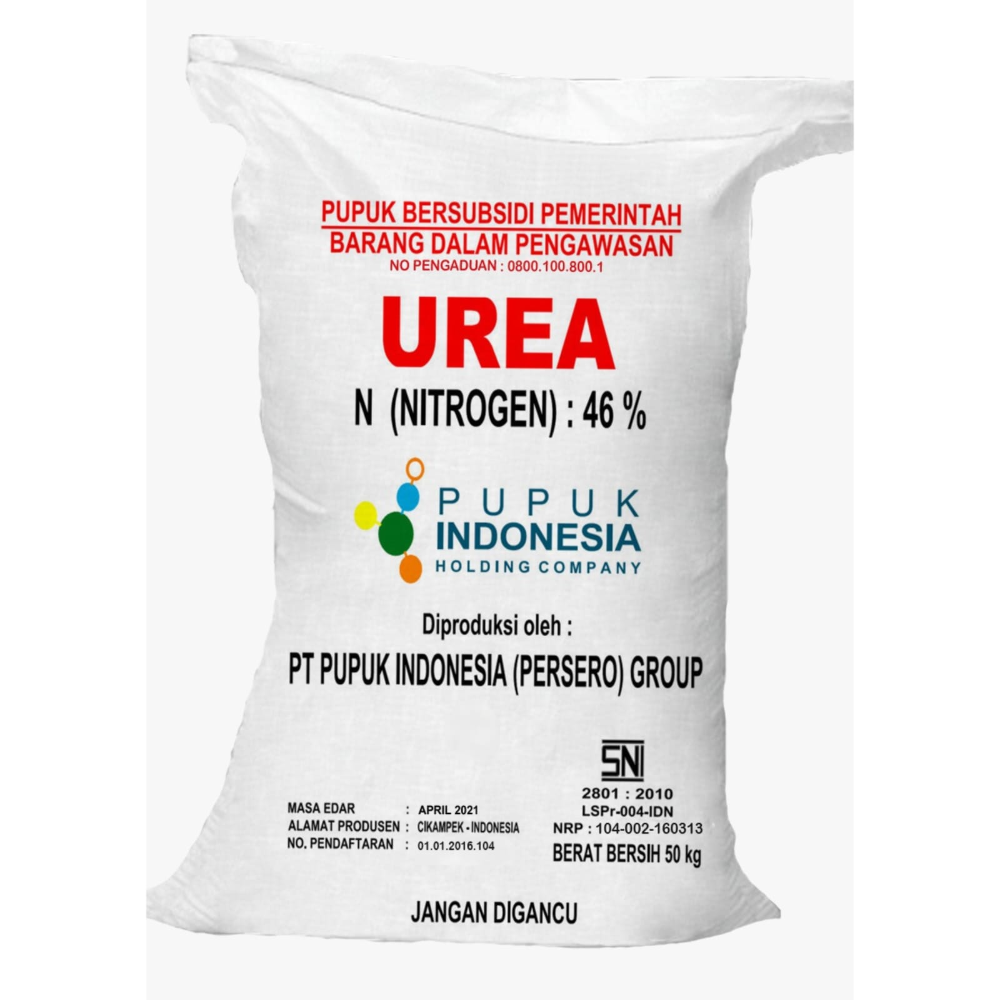
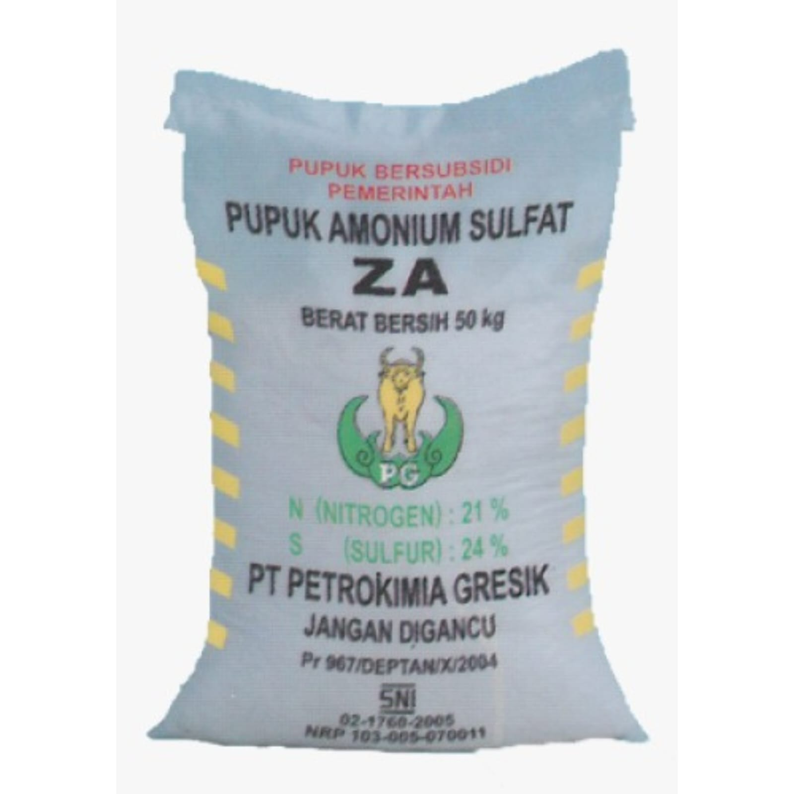
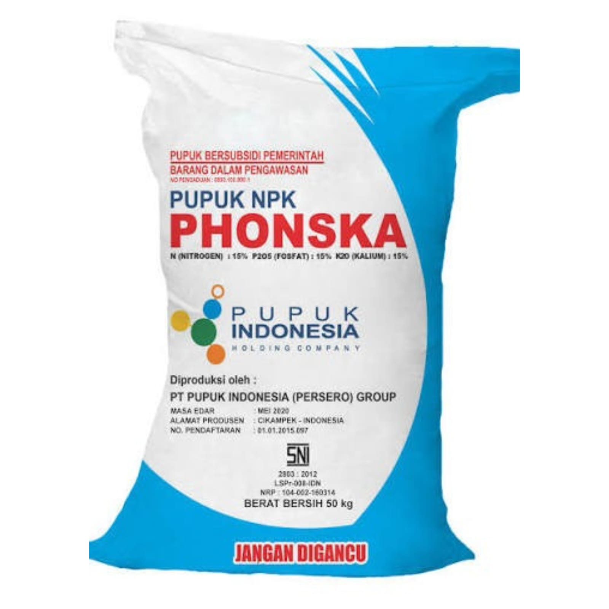

UD. Juan Tani adalah Penerima Pada Titik Serah (PPTS) resmi dari PT Pupuk Indonesia, melayani petani di Desa Paluh Manan, Kec. Hamparan Perak, Kab. Deli Serdang.



Pupuk bersubsidi adalah pupuk yang disediakan pemerintah dengan harga khusus untuk membantu petani menekan biaya produksi.
Petani yang telah terdaftar dan tercatat sebagai penerima subsidi di wilayah Desa Paluh Manan melalui Gapoktan.
Penebusan dilakukan langsung di UD. Juan Tani dengan membawa dokumen sesuai jalur penebusan yang dipilih.
Wajib dilampirkan saat penebusan melalui aplikasi iPubers
KTP Asli Petani Terdaftar
Foto Petani
KTP Asli / Fotocopy Petani Terdaftar
KTP Asli Perwakilan Keluarga
Fotocopy Kartu Keluarga
Foto Perwakilan Keluarga